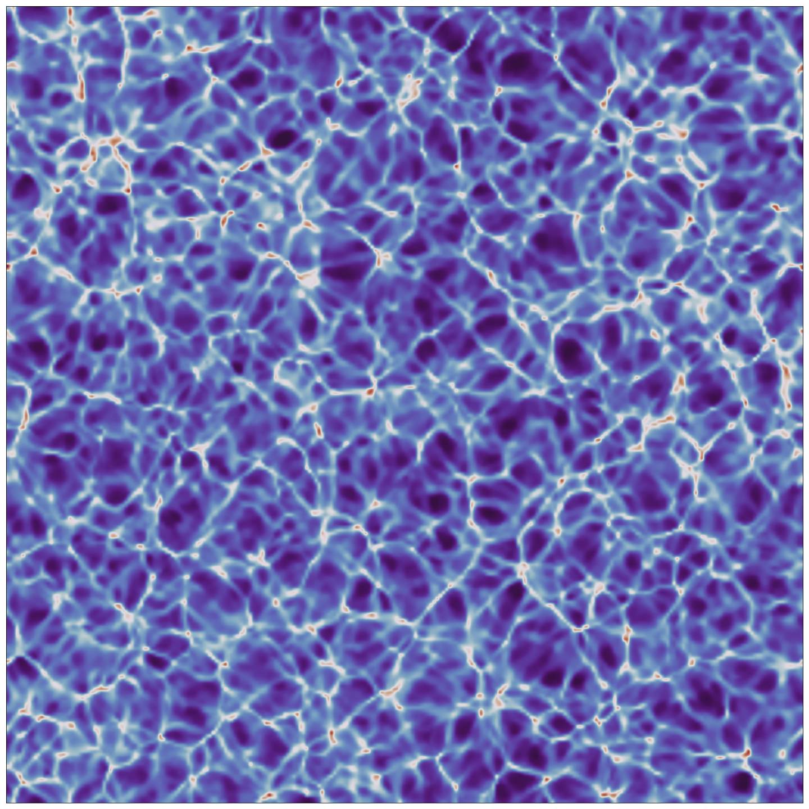

Research Overview (for non-experts)
Most modern cosmological simulations use an approximate theory of gravity.
This is Newtonian gravity, which describes gravitational interactions by an invisible force pulling anything with mass towards anything else with mass. This works pretty well in most situations we're used to on Earth, and actually in most situations in general. It begins to be a problem if you have something really massive (e.g. a black hole), or something small near something much more massive (e.g. the precession of the perihelion of Mercury around the Sun), or when we consider really large distances.
In cosmology our whole game is really large distances.
Einstein's theory of General Relativity is a much better description of gravity in these problematic situations.
Newtonian gravity (and some extensions to it) is predominantly used in cosmology because it's much simpler. Current state-of-the-art cosmological simulations use a combination of a homogeneous, isotropic spacetime in General Relativity and Newtonian dynamics.
Comparing what comes out of these simulations to observations means we can use them to test and improve our current best-fit cosmological model; the Lambda Cold Dark Matter model.
The instruments we use to observe the Universe are constantly being improved. This means our data are getting more and more precise. As our errorbars get smaller, we're starting to notice some peculiarities between what we see and what we expected to see, based on our cosmological model. One suggestion (among many) is that this could be because we're not using General Relativity in full.
Newtonian dynamics describes the nonlinear collapse of matter extremely well. But pairing this with a homogeneous, isotropic spacetime means that this spacetime is largely unaffected by this nonlinear evolution. Effects such as curvature and inhomogeneous expansion are not properly captured in these simulations. These will have a direct effect on our observations, since they both affect the path of light rays as they travel towards us. But, how large is this effect? Is it important as the precision of our observations improve? Could it already be having an effect on what we observe?
Numerical relativity is a way to solve Einstein's equations in full on the computer, so we don't need to make any simplifying assumptions about the spacetime, or the interaction between the matter and that spacetime. I do large-scale cosmological simulations of nonlinear structure formation using numerical relativity. Simulations like this are extremely new, and were only done for the first time a few years ago.
Simulations without simplifying assumptions will allow us to fully quantify any and all of the general-relativistic effects we expect to see in upcoming precision cosmological data, and maybe in existing data too.
What's that picture?
It's one of my simulations, so it's a model universe
 I use computer simulations to study the evolution of the Universe on really large scales. That picture up the top is a snapshot of one of my simulations. It's about 1 Giga-parsec across, or about 30 billion trillion kilometers.
I use computer simulations to study the evolution of the Universe on really large scales. That picture up the top is a snapshot of one of my simulations. It's about 1 Giga-parsec across, or about 30 billion trillion kilometers.
Simulations are useful because we can run a whole bunch of different models, and compare them to our observations to figure out which model works the best.
This picture on the left is what my simulation at the top of the page looked like when it started. It's based on actual observations of the cosmic microwave background radiation, which tells us what the Universe was like just a few hundred thousand years after the Big Bang. In this picture, red spots are hot and blue spots are cold. That also means that red spots are more dense, and blue spots are less dense.
My simulation then solves Einstein's equations in full to evolve this universe in time. Red spots (higher density) attract other stuff due to gravity, and so the red spots get redder and the blue spots get bluer.

This picture is what my model universe looks like at the present time (at a redshift of zero).
The colours still represent the density of each point, where lighter regions are more dense, and darker regions are less dense.
This simulation only contains dark matter, whereas galaxies (and stars, planets, you, and me) are made of baryonic matter, which I ignore because there's way more dark matter in the Universe.
This is what the basic structure of the large-scale galaxy distribution in our Universe looks like, since galaxies trace the dark matter distribution. You can imagine the Milky Way sitting somewhere in one of those dense filaments.
We can measure what the distribution of galaxies looks like in real life using observations. The plan is then to compare this to what comes out my simulations, and hopefully this will help us learn something about how nonlinear General Relativity might play a role in these observations.